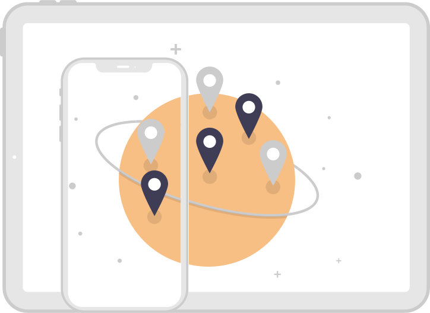
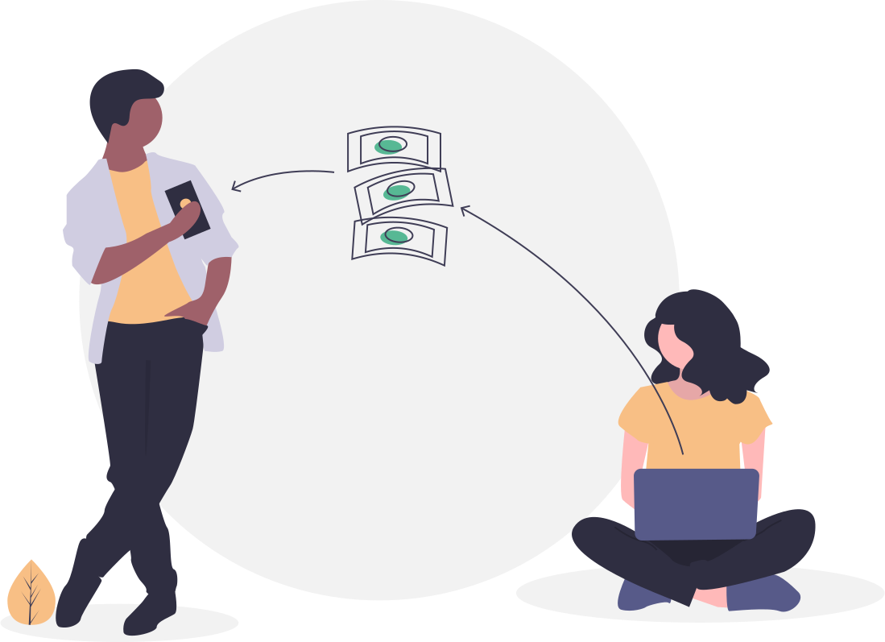

El acceso a la terapia online es mayor que a la terapia presencial, ahorra el desplazamiento y con solo un equipo que este conectado a internet se puede tener atención en tiempo real.
La familiaridad del espacio propio aseguran la comodidad y potencian el grado de anonimato al no tener que dirigirse a un centro psicológico.
La terapia online es una modalidad y opción de tratamiento cada ves más común y frecuente en nuestros días.
La modalidad más conocida y usada es a través de videoconferencia, donde un usuario y un psicólogo profesional tienen contacto en tiempo real a través de una computadora o dispositivo móvil.
Las experiencias que hay relacionadas con este tipo de terapia nos demuestran que sí, la terapia de psicología online es efectiva siempre que estemos en manos de un buen profesional.
La calidad y la profesionalidad son valores fundamentales cuando se habla de psicología y aún más si se habla de psicología en línea.
La terapia online es como si tuvieras la misma psicoterapia que es de forma presencial, pero por medio de tu celular o en tu computadora en videollamada.
No importa en qué parte del mundo estés, puedes acceder a una terapia con solo una conexión a internet.
Olvídate de los horarios de oficina, puedes elegir el horario que mejor te convenga para la terapia.
Pagas solo el costo de la consulta, no hay más gastos como el de desplazamiento entro otros.
Evita el tráfico y la preocupación de no llegar a tiempo a la sesión, desde tu casa o el lugar más cómodo donde estés puedes tomar la consulta.
Estés donde estés, podrás seguir con tus sesiones, sin tener que interrumpir o posponer algunas citas.
Estés donde estés, podrás seguir con tus sesiones, sin tener que interrumpir o posponer algunas citas.